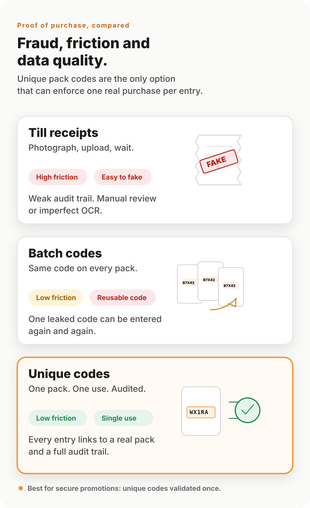

The proof-of-purchase problem
Every promotion that involves a reward, a prize, a refund or a loyalty point needs a way to verify that a real purchase happened. The mechanic the brand picks decides three things: how secure the campaign is, how easily it can be audited, and how much fraud the brand will absorb. Get that choice wrong and a campaign can lose its commercial value before it even runs.
Despite this, the choice is often made by default rather than design. Around 90% of European on-pack promotions still use batch codes — the weakest mechanic on the list — because unique codes have historically been seen as complex and expensive to print. That has changed. The economics, the technology and the integration model are all in a different place to where they were even five years ago.
The three mechanics, side by side
Below is a comparison of the three common proof-of-purchase mechanics — what they involve, how robust they are against fraud, how easy they are to audit, and what they ask of the consumer.

| Mechanic | Single use enforced? | Audit trail | Fraud resistance | Data quality | Consumer friction |
|---|---|---|---|---|---|
| Till receipts | No | Manual, partial | Low — receipts are easy to fake | Mixed — friction filters some bots, fakes still slip through | High |
| Batch codes | No | Limited | Effectively none | Poor — fake accounts inflate every metric | Low |
| Unique codes | Yes | Complete — every entry, every consumer | High — with optional AI Vision audit checks when needed | High — every record is a verified purchase | Low — especially when printed outside the pack |
Till receipts
Receipts are the original proof-of-purchase mechanic, designed for human inspection in a different era. They are trivially faked: edited in image software, generated by free online tools, or simply photographed from another consumer’s shopping. Auditing receipts at scale requires either expensive manual review or imperfect machine OCR, and audit trails are partial at best. They also create real consumer friction — people have to keep, photograph and upload them — which depresses participation rates among the audiences brands want most. The friction filters some bots, but motivated fraudsters still produce fakes that pass automated checks.
Batch codes
Batch codes — the same code printed on every pack of a SKU — are the most common mechanic in European on-pack promotions and the weakest. There is no way to enforce single use, because every pack carries the same code; once one consumer enters it, anyone can reuse it. Limiting entries per account doesn’t fix the problem either: bots and fraudsters simply create more accounts. The mechanic exists almost entirely because batch codes were historically much cheaper to print than unique codes — and that has changed.
The downstream cost is the consumer database itself. Because anyone can create endless fake accounts and reuse the same code, the records you accumulate are heavily contaminated — bots, duplicates, throwaway emails — which inflates campaign statistics, distorts ROI measurement, makes follow-up activity less effective, and creates GDPR overhead for records that shouldn’t exist in the first place.
Unique codes
Every pack carries its own unguessable, non-sequential code. Each code can only be used once, by one consumer, ever — enforcement happens at the system level rather than as a policy you have to police. Every entry is logged with a full audit trail. Each code can be cross-referenced against the consumer record, the SKU, the production date and the production line, and that cross-reference is itself a layer of fraud detection. Behavioural risk-scoring of consumers, combined with the audit trail, gives campaign-level statistics that are actually meaningful.
The data quality follows directly. Because a fake account can’t enter a code it doesn’t physically have, the consumer database a unique-code campaign produces is essentially self-cleaning: every record corresponds to a real person who made a real purchase. That makes the data genuinely useful for follow-up activity, personalised mechanics, lifetime-value modelling, and meaningful ROI measurement — and dramatically lowers the GDPR overhead of holding records you wouldn’t have wanted in the first place.
Hive IP’s closed-loop architecture takes the security further
The advantages above belong to unique codes in general. The advantages below are specific to how Hive IP implements them, and they matter because they remove a category of risk that has compromised entire campaigns at competing providers.
- Codes are generated algorithmically. A multi-cipher proprietary algorithm produces unique, non-sequential, alpha-numeric codes that cannot be guessed or pattern-derived.
- Codes are never stored on the ACG. The hardware unit in your factory holds the algorithm, not a list of codes. There is no list to leak.
- Codes are never held in a database that could be breached. Validation reverse-engineers each code algorithmically rather than looking it up in a table of issued codes. The systemic security risk of a large code database does not exist in our architecture.
- Codes are not passed between third parties unless required. When supplied to a packaging supplier, the file is encrypted in transit and tightly scoped.
Why this matters in practice. If a competitor’s database of issued codes is leaked or breached, an entire campaign can be compromised before a single code is even used. Closed-loop algorithmic generation closes that vector entirely — there is no master list of codes to steal.
AI Vision can add an audit layer when needed
When a unique code is printed on the outside of the pack — which we strongly recommend for cost, speed and consumer experience — the residual fraud concern is in-store code copying: someone scanning a code without buying the product. In practice this is rare, but for higher-stakes campaigns the latest AI Vision techniques now make it feasible to check that the user is not in-store when submitting the code.
That audit step does not have to be universal. It can be applied to every entry where the brand wants maximum assurance, or triggered selectively when a consumer’s behaviour looks suspicious. The campaign flow can ask the user to scan the code and surrounding environment, with BBD and production-line data cross-referenced against the submitted code.
A unique code is the only proof-of-purchase that can be used once, audited end-to-end, never exists in an exposable database, generates clean consumer data, and can be supported by AI Vision audit checks when the risk profile warrants it. No other mechanic on this page can do all five.
When till receipts and batch codes still make sense
To be even-handed: there are edge cases where till receipts and batch codes may still have a place, but the trade-off should be explicit. A low value promotion where the brand cares more about reach than rigour might be served well enough by a batch code, accepting that the resulting data will be polluted. A retail-receipt programme run jointly with a specific retailer might use receipts because they’re part of the agreed mechanic with that retailer. But for any promotion with monetary value attached — cash back, prizes, vouchers worth pursuing, refunds, anti-counterfeit verification — a unique code is the right primitive.
Common questions
What’s wrong with batch codes for promotions?
A batch code is the same code printed on every pack of a SKU. Once one consumer enters it, anyone can reuse it indefinitely. Limiting entries per account doesn’t help — fraudsters and bots simply create more accounts. As a security mechanism, batch codes provide essentially no protection.
The reason ~90% of European on-pack promotions still use them is historical: unique codes used to be expensive and complex to print. With Hive IP’s in-factory ACG, that’s no longer true.
Why aren’t till receipts good enough as proof of purchase?
Till receipts are trivially faked, photographed, edited or generated with image tools. They’re hard to audit at scale and create high consumer friction. Receipt fraud is a known and growing problem in promotional marketing.
What makes Hive IP’s unique-coding architecture different?
Codes are generated algorithmically using a multi-cipher proprietary algorithm. They are never stored on the ACG and are never held in a list or database that could be leaked. Validation reverse-engineers each code algorithmically rather than looking it up in a table — so a database breach of issued codes is structurally impossible.
How can AI Vision work alongside unique codes?
When a code is printed on the outside of a pack, the residual fraud concern is in-store code copying. In practice this is rare, but recent AI Vision advances make it feasible to add an audit step that checks the user is not in-store when submitting the code. It can be applied to all entries, or triggered selectively when a consumer’s behaviour pattern looks suspicious.
Can unique codes be used for things beyond promotions?
Yes — the same per-pack identifier underpins loyalty programmes, anti-counterfeiting, supply-chain traceability, provenance and sustainability data, recall handling, and consumer support. See how unique codes apply across the business.